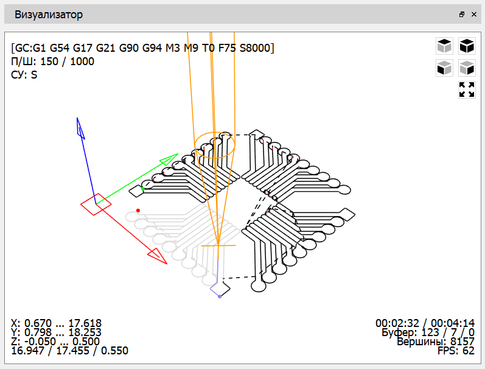

Графическое представление УП отображается в окне "Визуализатор".

В окне можно выделить пять функциональных областей:
Траектория инструмента УП представлена набором отрезков линий:
При передаче УП в контроллер ЧПУ часть отрезков меняет цвет в зависимости от следующих условий: часть траектории, обработанная ЧПУ, выделяется серым цветом; часть траектории, отправленная в ЧПУ - фиолетовым.
На траекторию УП нанесены три маркера-круга:
В основной области, также, отображается начало координат в виде прямоугольника красного цвета в плоскости X-Y, и осей: X - красного цвета, Y - зеленого, Z - синего. Здесь же выводится условное отображение инструмента в виде каркасной модели из линий оранжевого цвета.
Навигация в основной области выполняется следующим образом:
В левом верхнем углу окна расположена информация о текущем состоянии контроллера ЧПУ, а именно: строка состояния интерпретатора; текущие значения подачи и скорости вращения шпинделя; состояние компонентов ЧПУ (шпинделя, системы охлаждения).
Строка состояния имеет следующий вид:
[GC:G1 G54 G17 G21 G90 G94 M3 M9 T0 F75 S8000]
В строке выводится текущий режим работы интерпретатора контроллера ЧПУ для 12 модальных групп, номер инструмента, скорость подачи и скорость вращения шпинделя. Группы и возможные режимы приведены в таблице.
| Модальная группа | Режимы |
|---|---|
| Режим движения | G0, G1, G2, G3, G38.2, G38.3, G38.4, G38.5, G80 |
| Система координат | G54, G55, G56, G57, G58, G59 |
| Рабочая плоскость | G17, G18, G19 |
| Режим задания дистанции перемещения | G90, G91 |
| Режим IJK задания круговой интерполяции | G91.1 |
| Режим подачи | G93, G94 |
| Единицы измерения | G20, G21 |
| Режим компенсации радиуса инструмента | G40 |
| Режим компенсации длины инструмента | G43.1, G49 |
| Режим управления ходом программы | M0, M1, M2, M30 |
| Состояние шпинделя | M3, M4, M5 |
| Состояние системы охлаждения | M7, M8, M9 |
Строка состояния компонентов ЧПУ имеет вид:
СУ: SFM
Символ "S" отвечает за состояние шпинделя, выводится при вращении шпинделя в направлении часовой стрелки, заменяется на символ "C" при вращении шпинделя против часовой стрелки и не выводится при остановке шпинделя. Символ "F" отображается при включенной системе водяного охлаждения, "M" - системе воздушного охлаждения.
Границы обработки УП приведены в левом нижнем углу, здесь указаны минимальные и максимальные координаты для каждой из осей и габариты зоны обработки (без учета диаметра инструмента).
В правом нижнем углу выводится информация о текущем времени работы ЧПУ под управлением загруженной УП и ориентировочное полное время работы по УП.
Информация об очереди команд, отправляемых в контроллер ЧПУ представлена в строке ниже и включает в себя: общий размер команд, отправленных и обрабатываемых в данный момент контроллером ЧПУ; количество обрабатываемых команд; количество инжектированных команд (команд отправляемых помимо команд УП) в очереди.
В этой же области имеется вспомогательная информация об общем количестве вершин, составляющих 3D проекцию, и значение количества кадров в секунду построения проекции.